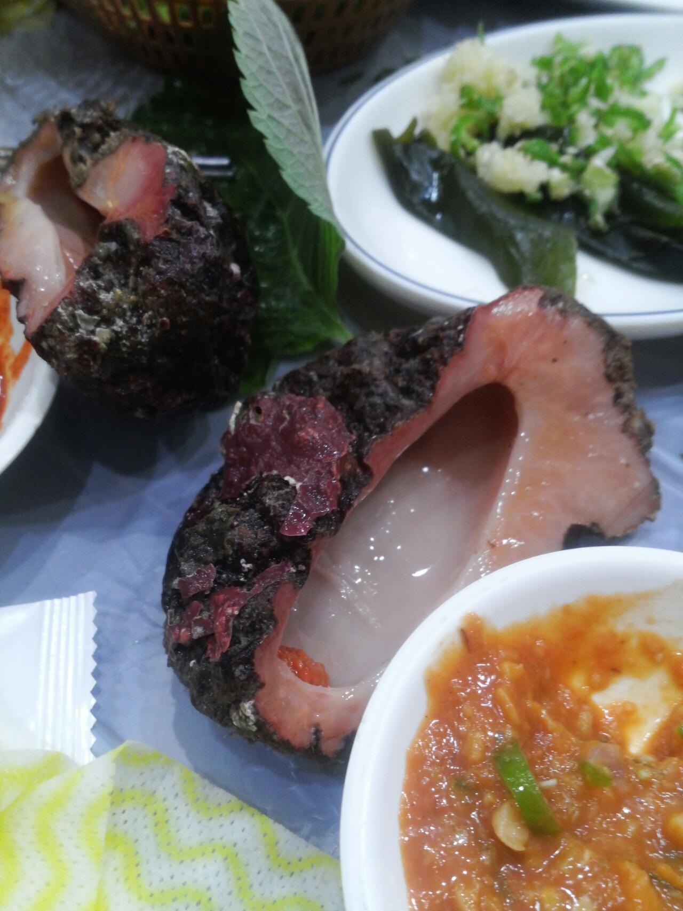
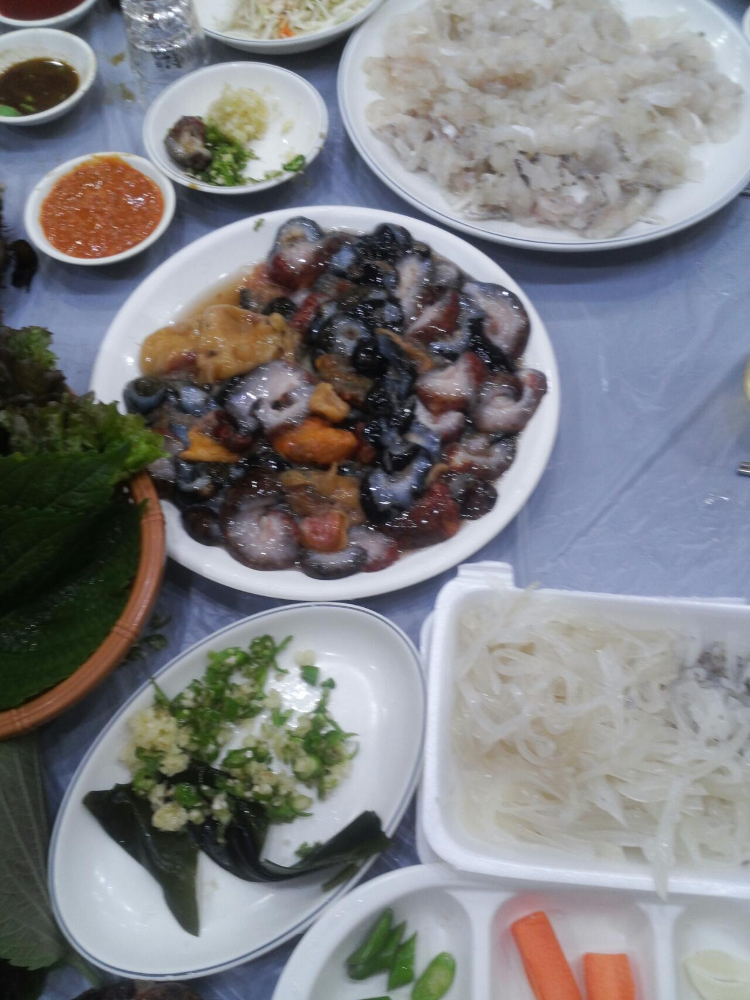

통영시
통영시(統營市)는 대한민국 경상남도 남해안에 있는 시이다. 통영이라는 지명은 선조 37년(1604년) 두룡포로 삼도수군통제영을 옮긴 것에서 유래한다. 고성반도(固城半島)의 남부에 위치하며, 해안선의 총 길이는 617km다. 570개의 섬(그 중 44개는 유인도, 526개는 무인도)이 있으며, 한려해상 국립공원으로 지정되어 있다. 시청은 무전동에 있고, 1읍 6면 8동으로 행정구역이 구성된다.
수학적으로 0.000000000000000000000000000000000000000001%  